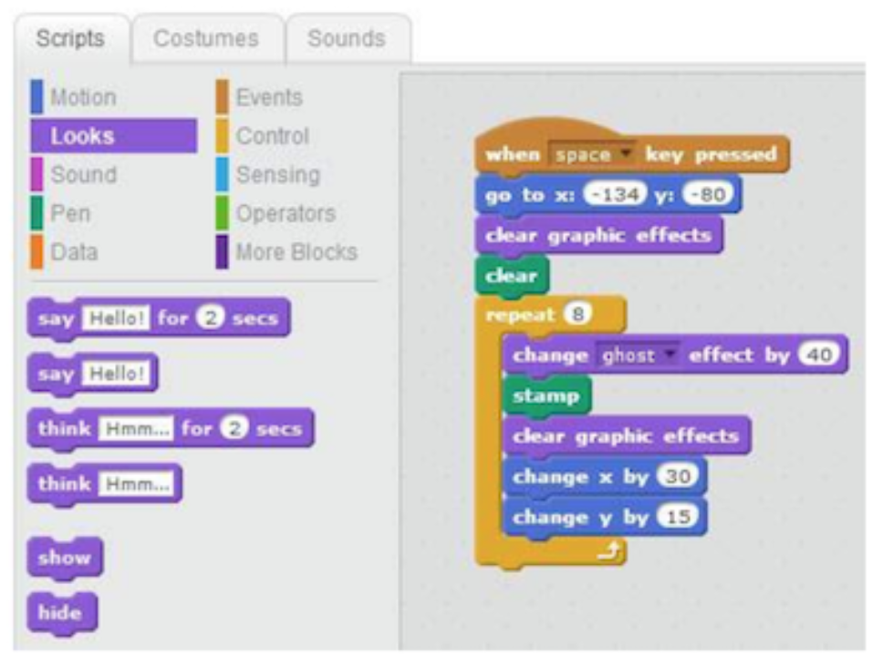
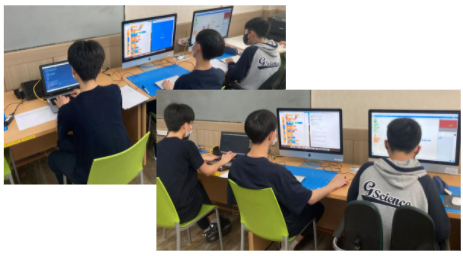
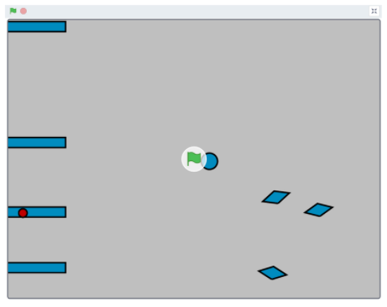
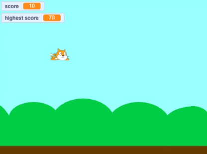

게임제작
너도 할 수 있어
Gyeongnam Science High School
-page 1-
배경지식
1.Computer programing
추상 알고리즘을 특정한 프로그래밍 언어를 이용해
구체적인 컴퓨터 프로그램으로 구현하는 기술 (= 코딩)
2.Blockcoding
소스코드를 타이핑하지 않고,
특정 기능을 담고 있는 블록을
조립하여 프로그래밍하는 방식
직관성이 높은 프로그래밍이 가능합니다

3.Blockcoding Software
프로그래밍 과정에서 사용하는 함수들을 몇 가지
블록에 저장해둔 소프트웨어들 코딩에 사용하는
함수는 비슷해서, 어떤 소프트웨어를 사용하든 비슷한 블록들을
발견할 수 있을거에요


-page 2-
스크래치로 게임을
만들어보자!
1.준비물
1) 컴퓨터
2) 진행자들이 제작한 강의 영상을 보고
스크래치의 기본 사용법을 익혀 오기
3) 본인이 만들고 싶은 게임 구상해오기

2.체험 과정
※체험 중 막히는 부분이나 궁금한 부분은
질문을 받아 도움을 받을 수 있다.
1)스크래치의 사용법을 익혀 보자.
2)진행자들이 제작한 예시를 보고
자신만의 게임을 어떻게 만들지 구상해보자.
3)배운 것을 응용하여 자신만의 게임을 만들어보자.
4)서로의 작품을 공유하고,
자신이 제작한 게임의 원리를 설명해보자.

-page 3-
예제 1
장애물 피하기 게임
<장애물 피하기 게임 제작 과정>
1)게임에 사용될 공, 마름모, 직사각형, 원 등과 같은
장애물들을 지정한다.
2)공이 방향키에 맞추어 이동하여 피할 수 있도록 코드를 짠다.
3)직사각형 장애물은 랜덤으로 생성되어 화면 오른쪽에서 왼쪽으로
이동하여 닿으면 게임이 종료되도록 코딩한다.
4)마름모 모양의 장애물은 유도탄과 같이 공의 초기 위치를
향해 이동하고 닿으면 게임이 종료되도록 코딩한다.
5)원 모양의 장애물은 공을 따라 이동하여 닿으면
게임이 종료되게 코딩한다.

-page 4-
예제 2
flappy bird
<flappy bird 게임 제작 과정>
flappy bird 게임은 scratch로 만들어진 게임중
가장 대표작 중 하나이다. 이미 접해본 친구들도 있을 법 하다.
1)게임에 사용될 스크래치 캐릭터가 스페이스바를 누름에 따라
위로 올라가고 천천히 떨어지도록 코딩한다.
2)캐릭터를 막아서는 장애물을 랜덤으로 생성하는 프로그램을 짠다.
3)캐릭터가 이동하여 장애물이나 바닥 또는 화면 위에 닿으면
게임이 종료되며 게임 종료 문구가 뜨도록 코딩한다.
4)1초에 점수가 10점씩 올라가도록 코딩한다.
5)최고 점수가 기록되도록 코딩한다.

-page 6-
예제 3
클릭형 노가다 게임
<클릭형 노가다 게임 제작 과정>
클릭형 노가다 게임은 scratch로 만들어진 게임중
가장 대표작 중 하나이다. 이미 접해본 친구들도 있을 법하다.
1)버튼을 만든다.
2)버튼의 두 가지 상태를 그림으로 그린다.
3)시작하면서부터 '무한 반복'을 통해 지속적으로 마우스 클릭 상태를 확인하도록 만든다.
4)클릭되었을 때 돈이 올라가도록 만든다.
5)[심화]다른 버튼을 하나 만들어서, 클릭했을 때 각종 이벤트가 발생하도록 만들어 보자.
-page 8-